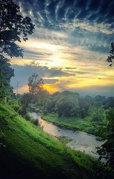

Uma experiência inspirada na Pokédex da Mata: tire uma foto, descubra a espécie e guarde suas descobertas.

🌅 Mata GrandeEnvie uma foto de uma ave. O BIÓLOGO vai analisar a imagem e só mostrará um resultado quando tiver confiança suficiente.